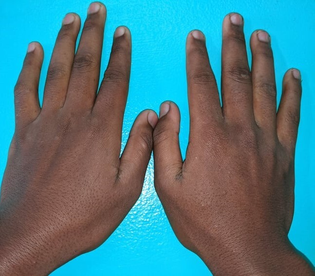
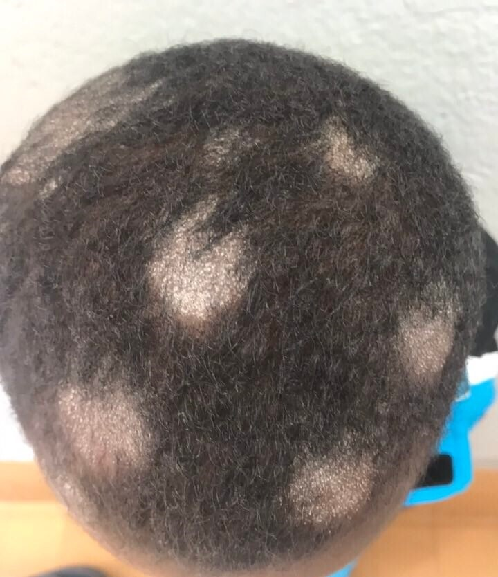

Dataset
Sample Images




Dataset Usage Agreement
This dataset is provided under the PASSION data public license.
Key Points:
- Non-Commercial Use Only: You may use the dataset for non-commercial purposes only. Commercial use is strictly prohibited.
- Attribution Required:If sharing or adapting the data, credit the original creator.
- Prohibition on Re-identification: You must not attempt to re-identify any individuals within the dataset. Any effort to re-identify individuals is strictly prohibited.
- Sharing Restrictions:
- Direct Download Link: You must not share the direct download link to the dataset.
- Website Link Only: If you wish to share the dataset, you must share the link to the website hosting the dataset, not the direct download link.
- Reposting Prohibition: You must not repost the dataset on any other data hosting platforms or websites.
By using this dataset, you acknowledge that you have read and agree to abide by these terms. Any violation of these terms may result in legal action and the revocation of your right to use the dataset.